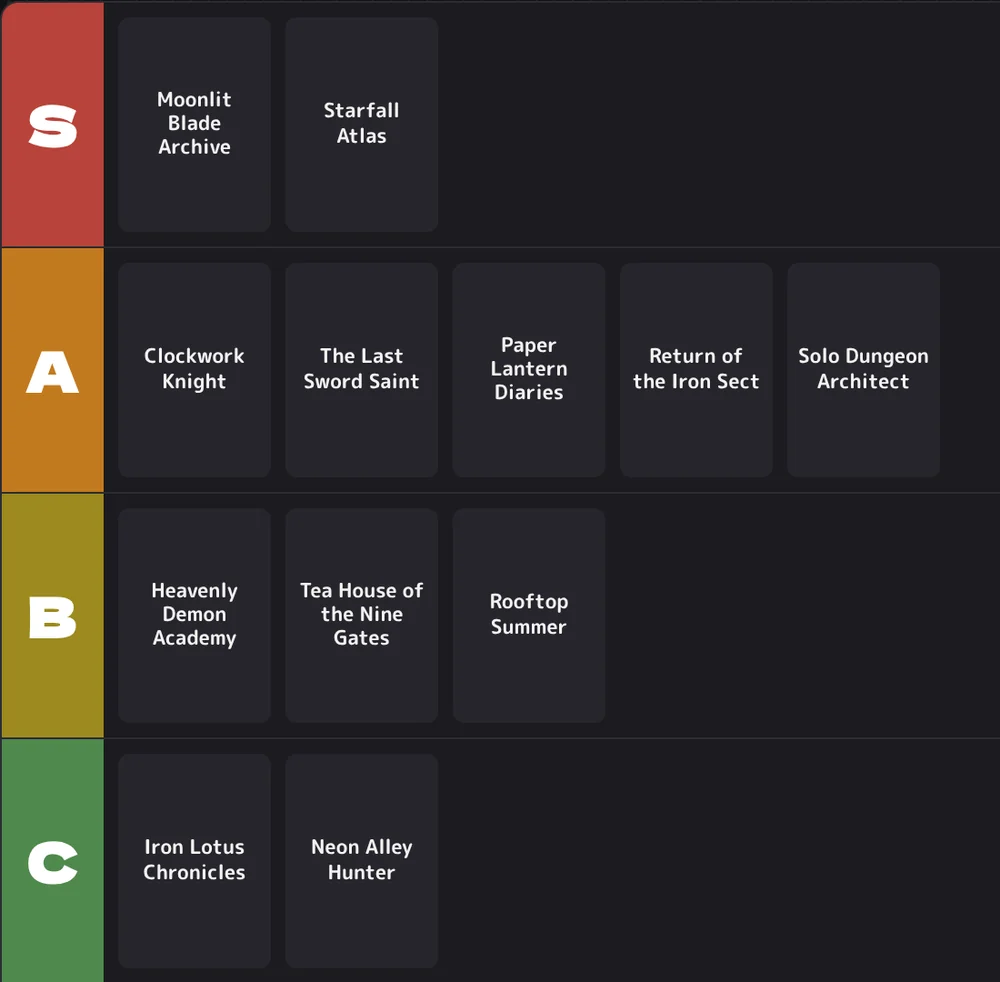

Manga Tracker
A personal app for manga, manhwa and manhua: reading progress, ratings, new chapters, a tier list and recommendations. The data lives in your own Google Sheet, and you use it as a web app on iPhone, iPad and Mac.

The idea
I read a lot of manga, and over time it became hard to keep track. Bookmarks were no longer enough.
The app sorts by category, shows what I read recently or have not read for a while and where many new chapters are waiting, and lets me save new series for later.
Features
- List, status and filtersEach series has a cover, categories, status (reading, hiatus, marinate, completed, dropped), a rating and a chapter counter. Filters, search and sorting by category, last read, rating or unread chapters.
- New chaptersA check runs four times a day inside Google, even when the app is closed. The app learns the usual release day and sets a series to hiatus after three weeks without news. An optional summary email arrives at 18:00.
- Instagram ideasShare a post to a shortcut. The script reads the caption and the text on the images and finds titles. You decide what gets added; nothing is added on its own.
- Matching, recommendations, tier listEach series is matched to AniList. Recommendations come from AniList, weighted by your ratings. Rated series are sorted into tiers S to E.
- Re-readA second pass has its own progress. The first one stays until the new one catches up.
- Safari overlay (optional)Shows how far you have read and can save your progress automatically, with an undo message.
- Private by designThe list is in your own Google Sheet. Every access needs your personal key, outside text is never written as a formula, and a backup is kept every month.

How it works
Web app
One page on GitHub Pages, the same for everyone. A Python script builds it from the source files.
Apps Script in your sheet
Checks the key on every call, reads and writes the data and runs the scheduled checks.
Google Sheet
The database, in your own Google account.
External sources
AniList, MangaUpdates and a WEBTOON feed for matching, recommendations and new chapters.
Decisions
Google Sheet as database
Free, no own server, and the data stays in your Google account.
One sheet per user
Friends can use the app too, and everyone keeps their own list.
Web app instead of the App Store
One interface for iPhone, iPad and Mac, installable as a home screen icon.
Suggestions, not automation
Instagram recognition can be wrong, so titles are only offered until you choose.
Go deeper
This page is the short version. Questions about the architecture, the requirements or anything else? The project wiki has the details.